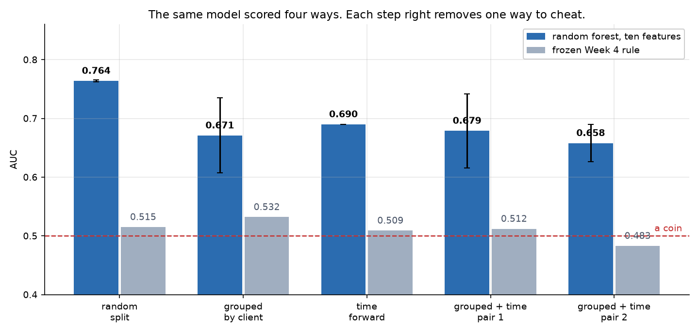
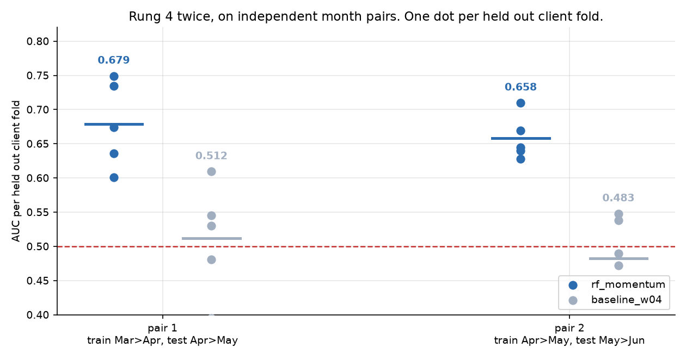
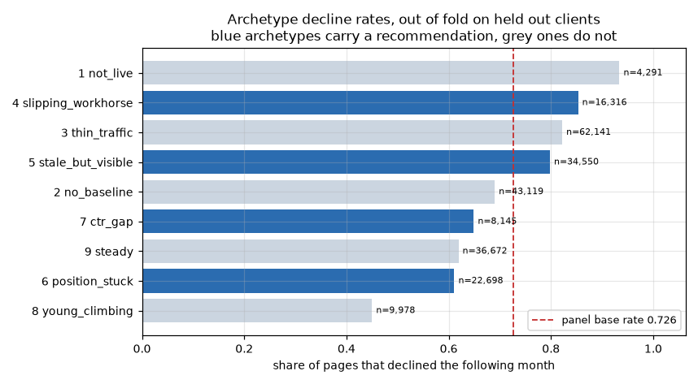
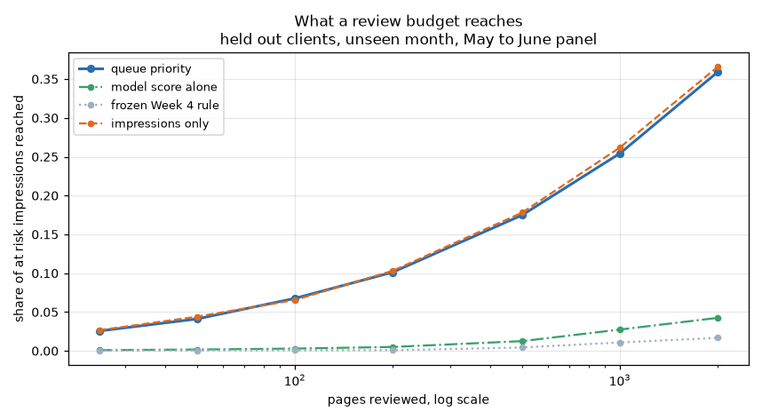

A content team with more pages than review hours needs to know which pages to open first, so I asked whether last month's search performance alone can rank the pages most likely to lose impressions next month. I built a monthly panel of 176,738 to 208,636 live pages across 55 anonymised clients from the FlyRank warehouse, labelled a page as declining when its impressions fell below 80 percent of the prior month, and scored one frozen random forest against the heuristic it would replace on four validation designs of increasing strictness. On a random split the forest reached an AUC of 0.764, but holding out whole clients cost 0.093 of that on its own, and holding out clients and a month together, which is the deployment condition, left 0.658 to 0.679 across two independent pairs against 0.483 to 0.512 for the heuristic. Turning that score into a queue of 82,877 ranked rows with a reason attached to each one, I measured that it does not protect more at risk traffic than simply sorting by impressions, and that its real gains are review precision and the exclusion of pages the catalogue already calls unpublished. Every number here is an association observed over four months of one release; nothing in this work identifies a cause, and no result should be read as evidence about how Google ranks anything.
A mid sized content operation has tens of thousands of live pages and a review capacity measured in tens of pages a month. Traffic decay is not evenly distributed and it is not announced: by the time a monthly report shows a page falling, the fall has already happened. The practical question is not how the site is doing. It is which pages to open on Monday.
Two framings were available and I rejected the more obvious one. Forecasting next month's impressions per page gives a number nobody acts on, and it is graded on how close the number is rather than on whether the right pages got attention. Ranking by risk of decline is graded on the thing that matters, which is whether the top of the list is worth a reviewer's hour.
I also chose decline over growth opportunity. Decline has a definition the data can actually check a month later. Opportunity does not, and a model whose label cannot be verified is a model that cannot be wrong.
So the question this paper answers: using only what is knowable on the last day of a month, can I rank live pages by how likely they are to lose search impressions the following month, well enough to beat the heuristic a team would otherwise use, on clients and a month the model has never seen?
The FlyRank ML Internship warehouse, one release, read directly over DuckDB. Two tables:
fact_content_daily_performance for daily impressions, clicks and summed position, and
dim_content for the page catalogue, creation dates, publication flags and keyword market
columns. All identifiers in the release are pseudonyms, and nothing in this paper or the notebooks behind
it names a client, a domain, a URL or a query.
The design is a panel: features from one calendar month, label from the month after. That gives three labelled pairs and one live month with no label yet.
| Panel | Feature month | Label month | Pages | Clients | Declined |
|---|---|---|---|---|---|
| P1 | 2026-03 | 2026-04 | 176,738 | 47 | 0.532 |
| P2 | 2026-04 | 2026-05 | 194,760 | 51 | 0.503 |
| P3 | 2026-05 | 2026-06 | 237,910 | 56 | 0.726 |
| Live | 2026-06 | none yet | 208,636 | 55 | unlabelled |
June is the last month the release holds, which makes it a sealed test month. It is used that way: as a label for the final forward test and as an unlabelled month to score. Every threshold in this work was fixed earlier, in Week 4 and Week 5, and the click through floor in the routing layer comes from the April panel, so nothing was tuned inside the month it is applied to.
content_updated_date, last_optimized_date and
optimization_eligible_date. The catalogue holds one snapshot value per page, and for most
rows that value is dated after the decision day, so what the column held at decision time is
unrecoverable. Using it would leak the future. Section 3 shows the check rather than asserting it.The label. A page declines when its impressions in the following month fall below 0.8 times its impressions in the feature month. Twenty percent is a threshold I chose, not one the data handed me. It is wide enough to sit outside ordinary noise on a trafficked page and narrow enough to fire often enough to model.
The decision day is the last day of the feature month, and every feature has to be knowable on it. That single rule is what excluded the three date columns above.
Ten features, all aggregated inside the feature month: month totals for impressions and clicks; click through rate; impression weighted average position; days with at least one impression; page age in days; impressions in each half of the month; and the ratio between the two halves for both impressions and clicks. Publication flags and keyword market columns travel with the panel for routing but are never model inputs, and the notebook asserts that rather than trusting it.
The baseline is real, not a straw man. It is the heuristic a team actually reaches for: score a page by its age in days if it drew at least 50 impressions and is at least 90 days old, otherwise zero. Frozen in Week 4 and unchanged since.
The model is one random forest, 200 trees, minimum 100 samples per leaf, fixed seed, chosen in Week 5 against logistic regression and a stratified dummy. Nothing in the capstone retunes it, because tuning against the forward test is how an honest number becomes another mirage.
The same model and the same baseline, scored four ways, each rung removing one way the rung above it could flatter itself.
Three tests, because a clean validation design proves nothing if the features themselves contain the answer. The suspect was the within month momentum ratio: the label compares next month against this month's total, and momentum compares the two halves of that same total, so they share a term.
| Check | AUC | What it establishes |
|---|---|---|
| Positive control: next month's impressions handed to the model | 0.975 | The harness can detect a leak. Worth knowing before trusting any other line. |
| The ten honest features, same fold | 0.643 | The reference point for the two ablations below. |
| Momentum removed | 0.616 | Weaker, not collapsed. A useful feature behaves like this; a label in disguise does not. |
| Static features only | 0.580 | Momentum carries real signal beyond the static six. |
| Decoupled label sharing no month with the features | 0.661 | Ranking quality survives when the shared arithmetic term is broken. |
The decoupled label kept the AUC intact but inverted the direction of the momentum effect. Under the original label a page falling within the month is likelier to decline; under a label that shares no month with the features, a rising page is.
| Momentum quartile | Pages | Declines, original label | Declines, decoupled label |
|---|---|---|---|
| Q1 lowest | 39,846 | 0.676 | 0.476 |
| Q2 | 39,554 | 0.547 | 0.518 |
| Q3 | 39,523 | 0.401 | 0.547 |
| Q4 highest | 39,626 | 0.287 | 0.632 |
A forest learns whichever direction its training data shows, so a stable AUC across that flip does not vindicate the story I had attached to the feature. The ranking is real. "Falling pages keep falling" is not established, and it is therefore not claimed anywhere in this paper.
Model against baseline, on the same rows, at every rung. The base rate is in the last column because on this panel a coin that always says decline is right about half the time, and any figure quoted without the base rate beside it is decoration.
| Validation design | Forest AUC | Rule AUC | Gap | Forest p@500 | Rule p@500 | Base rate |
|---|---|---|---|---|---|---|
| 1. Random split | 0.764 ±0.002 | 0.515 | 0.249 | 0.938 | 0.615 | 0.532 |
| 2. Grouped by client | 0.671 ±0.064 | 0.532 | 0.139 | 0.774 | 0.622 | 0.532 |
| 3. Time forward | 0.690 | 0.509 | 0.181 | 0.972 | 0.578 | 0.503 |
| 4. Grouped + time, pair 1 | 0.679 ±0.063 | 0.512 | 0.167 | 0.867 | 0.383 | 0.509 |
| 4. Grouped + time, pair 2 | 0.658 ±0.032 | 0.483 | 0.175 | 0.919 | 0.626 | 0.724 |

The drop from rung 1 to rung 2 is the whole lesson. Same features, same trees, same rows: only the split changed. Shipping the random split number would have promised 0.764 and delivered around 0.679.
The baseline does not move. It sits near 0.512 at the strictest rung, which is what a coin looks like. That is the honest comparison: the model is not impressive, and it is measurably better than the heuristic it would replace, and it stays better when both are scored on clients and a month neither had seen.

One metric deserves a warning. On a random split the rule's precision in its top 50 reads 0.960, which looks excellent and is an artefact: the rule assigns thousands of pages an identical score, so its top 50 is whatever the tiebreak happens to return. Hand it an unseen client and a month it has not seen and the same figure falls to 0.324. A number that moves that far on a tiebreak is not measuring the rule, which is why the AUC columns above carry the argument and the precision columns are reported next to them rather than instead of them.
The run behind this page also reproduces the audit committed three weeks earlier. Rungs 1 through 3 come back within 0.002 AUC of the figures recorded then, on a fresh warehouse read, which is the check that the pipeline is deterministic rather than the claim that it is.
The forest is uncalibrated and nothing here calibrates it. Across ten equal size buckets of out of fold scores the observed decline rate runs from 0.450 in the lowest bucket to 0.896 in the highest, so the two ends separate clearly. It does not rise monotonically: 1 bucket sits below the bucket beneath it. Adjacent buckets are therefore not reliably ordered, and only the broad direction is.
The level is further off than the ordering. Every bucket's observed rate sits above its own mean score, by as much as 0.424, which is what fitting on panels near a 0.532 base rate and scoring a month where 0.726 of pages fell will do. So the score never appears in a sentence like "this page has a 72 percent chance of declining", every cutoff in section 6 is a review capacity rather than a probability threshold, and nothing downstream reads the score as a level.
The panel requires impressions in the feature month, which sets aside most of the catalogue. Of 519,606 catalogued pages, 208,636 drew impressions in the live month, which is 40.2%. Retention is not flat across age bands, and it does not fall smoothly either.
| Page age at the live month's decision day | Catalogued | Scored | Share scored |
|---|---|---|---|
| 0 to 90d | 82,317 | 49,063 | 0.596 |
| 91 to 180d | 78,887 | 55,222 | 0.700 |
| 181 to 365d | 191,432 | 71,641 | 0.374 |
| 1 to 2y | 163,115 | 32,674 | 0.200 |
Retention peaks in the 91 to 180d band at 70.0% and bottoms out at 20.0% for 1 to 2y, and pages older than two years fall outside these bands entirely. So the scored population is not a random sample of the catalogue. Everywhere this paper says "content" it means "content that drew impressions that month", and those are different populations. A page with no impressions is invisible to this model, and invisible is not the same as unimportant.
Across the three labelled pairs the decline rate runs 0.503 to 0.726, a spread of 0.223. Set that against the model's forward margin over the rule, which is 0.171: the month a queue is measured in moves its apparent precision further than the choice of model does. That is not a modelling result, it is what happened, and it is why every precision figure here is printed next to the base rate of its own pool.
Nothing here shows that refreshing a page changes its traffic. The warehouse contains no experiment, no holdout and no randomisation over refresh decisions, and pages that get refreshed are chosen, which is a cause of its own. Every result is an association observed on this release over these months. The language stays at observed, measured, associated with, directional and decision support. No result in this work says anything about how Google's ranking systems operate.
The release spans eighteen calendar months and this work uses the last four, because those are the months where every feature the panel needs is present in full. Four months cannot separate a seasonal pattern from a trend, so nothing here is attributed to a season. The forward result was checked on two pairs, which is enough to show it is not a fluke of one pair and not enough to call it stable. A third pair would help. There is not one.
The archetypes that carry no recommendation, meaning the two hard exclusions plus everything under the 50 impression floor and everything the router judged steady, cover 156,201 pages, which is 65.7% of the evaluated panel and 40.1% of its impressions. Around 112,030 of those pages did decline, and the queue never mentions one of them. That is the deliberate cost of refusing to recommend work on evidence too thin to support it rather than an oversight, and it is the first number to put in front of anyone who proposes lowering the floor.
If forward AUC on a new pair falls within 0.05 of the frozen rule, the model is not earning its complexity and the rule should ship instead. If a review log ever shows reviewers disagreeing with the reason code more than 30 percent of the time, the archetype thresholds are wrong rather than the ranking. Both are live triggers in the monitoring table below.
A ranking is not an action. Two pages can share a score and need entirely different work: one is a heavy earner losing ground inside the month, the other ranks on page two and has never been touched. So the score decides the order and a routing layer decides the verb.
Nine archetypes, evaluated in order, first match wins, so every page carries exactly one reason. Two are hard exclusions and come first on purpose, because a queue that recommends work on a deleted page burns the reviewer's trust in everything below it. Rates below are measured on held out clients in a month the scoring model never saw, against a panel base rate of 0.726.
| Archetype | Condition | Action | Pages | Declined | vs base |
|---|---|---|---|---|---|
1 not_live |
is_published is false or is_deleted is true | drop from queue | 4,291 | 0.934 | 1.29x |
2 no_baseline |
first half impressions equal zero | human look no rec | 43,119 | 0.690 | 0.95x |
3 thin_traffic |
impressions below 50 | no action | 62,141 | 0.822 | 1.13x |
4 slipping_workhorse |
impressions at least 500 and mom_impr below 0.8 | refresh senior review | 16,316 | 0.853 | 1.18x |
5 stale_but_visible |
age at least 90 days and mom_impr below 1.0 | queue for refresh | 34,550 | 0.798 | 1.10x |
6 position_stuck |
average position between 11.0 and 25.0 | on page optimisation | 22,698 | 0.611 | 0.84x |
7 ctr_gap |
average position at most 10 and ctr below 0.15 percent | title snippet review | 8,145 | 0.649 | 0.89x |
8 young_climbing |
age below 90 days and mom_impr at least 1.0 | monitor only | 9,978 | 0.450 | 0.62x |
9 steady |
no earlier condition matched | no action | 36,672 | 0.619 | 0.85x |

Ranking is score x impressions, ordered inside each client. A single portfolio wide
sort put the entire global top 100 inside one account, which is a report about account size rather than a
work queue; ranking within the client cuts the same top 100 across ten of them. The live queue holds
82,877 rows across 47 of 55 clients, which is
39.7% of live pages. The other 60.3% get silence,
and silence is the design working rather than a gap to fill by lowering the floor.
An AUC is not a decision. The real question is narrower: given N review hours, does this queue put better pages in front of a reviewer than the obvious alternatives? So the same pool was ordered four ways and measured at seven budgets, on the labelled May to June panel rather than on the live month, because only a labelled month can say who was right. The honest competitor is sorting by impressions, which anyone can do in a spreadsheet in ten seconds. The pool is the 81,709 pages the four recommending archetypes cover, which is 34.3% of the panel holding 59.9% of its impressions, at a base decline rate of 0.742. Read every precision figure in the table against that base and not against zero.
| Review budget | At risk traffic reached | Of pages opened, share declining | ||||
|---|---|---|---|---|---|---|
| Queue | Traffic sort | Score alone | Queue | Traffic sort | Score alone | |
| 50 pages (17h) | 0.041 | 0.044 | 0.002 | 0.840 | 0.720 | 1.000 |
| 200 pages (67h) | 0.101 | 0.103 | 0.005 | 0.810 | 0.685 | 0.940 |
| 500 pages (167h) | 0.175 | 0.178 | 0.013 | 0.812 | 0.714 | 0.930 |
| 2,000 pages (667h) | 0.359 | 0.366 | 0.043 | 0.810 | 0.733 | 0.923 |

A plain impressions sort reaches at least as much at risk traffic as the queue at 6 of 7 review budgets; the queue's measured advantage is precision and routing, not reach. I am stating that plainly because it is the measured result and finding it out was the point of the exercise.
What the queue buys is narrower than a lift number, and it is worth stating in three parts. Of the pages a reviewer actually opens it holds a higher share of genuine decliners than a traffic sort does at every budget in the table. Every row carries a reason a sort cannot give: ranks just off the first page, click share under the April floor, or the catalogue says this page is not live. And 10,156 pages that drew impressions in the live month while the catalogue calls them unpublished or deleted, carrying 3,080,255 impressions between them, never reach a reviewer at all, where a traffic sort puts a good number of them near the top.
Note the third column of the precision block, too. Sorting by model score alone is the most precise ordering in the table and it is useless, because it reaches 0.013 of at risk traffic at 500 pages. A decline model on its own prefers small pages. That is the reason impressions are in the ranking at all.
A model that ships without stated triggers is a model somebody will still be running unchecked in a year. Retrain cadence is monthly, on the newest labelled pair.
| Watch | Signal | Now | Trigger | Then |
|---|---|---|---|---|
| input | share of pages below the 50 impression floor | 0.422 | outside the observed range by more than 0.05 | check the month is complete before anything else |
| input | share of pages with no first half baseline | 0.112 | outside the observed range by more than 0.05 | the no_baseline exclusion is changing size, review the routing |
| input | median impressions, scored month vs training month | 91 vs 80 | ratio outside 0.75 to 1.33 | refit before scoring, do not ship the queue |
| label | base decline rate of the newest labelled pair | 0.726 | outside the observed range by more than 0.05 | queue precision moves with it, say so before anyone reads the queue |
| score | mean p_decline, scored month vs training month | 0.714 vs 0.451 | gap above 0.05 | inputs moved, refit and rerun the drift table |
| ranking | forward AUC on the newest labelled pair | 0.658 | below 0.60, or below the frozen rule plus 0.05 | stop shipping the model queue, fall back to the rule, investigate |
| ranking | forest AUC minus frozen rule AUC on the same rows | 0.175 | at or below zero for two consecutive pairs | retire the model, the rule is cheaper and a person can read it |
| process | reviewer agreement with the reason code | not measurable yet | below 0.7 | the archetype thresholds are wrong, not the ranking |
Every figure and every number on this page is written by one notebook,
work/notebooks/capstone.ipynb, and this page is generated from the metrics file that notebook
exports rather than typed by hand, so the paper cannot drift from the run that produced it.
work/notebooks/capstone.ipynb, runs top to bottom in one pass
and opens in Colab from the badge in its first cell.work/notebooks/ with outputs saved.work/outputs/w08_capstone_metrics.json and the four figures in
work/figures/. The metrics file carries every number quoted here, including the ones that do
not flatter the model.scripts/build_paper.py reads that metrics file and writes
docs/index.html. Rerun the notebook, rerun the script, and the page follows. No figure on it
was typed in by hand, which is the only reason it can be trusted to match the run.The per page queue export is deliberately not committed. It is row level output on real client content, and the repository is public. The metrics file and the figures are the receipts.
Built on the FlyRank ML Internship dataset. Thanks to the FlyRank team for a warehouse with real messiness in it, including the publication flags that turned into the single highest value rule in the playbook.
All client and page identifiers in the release are pseudonyms. No client name, domain, URL or search query appears in this paper, in the notebooks, or in any committed artifact.